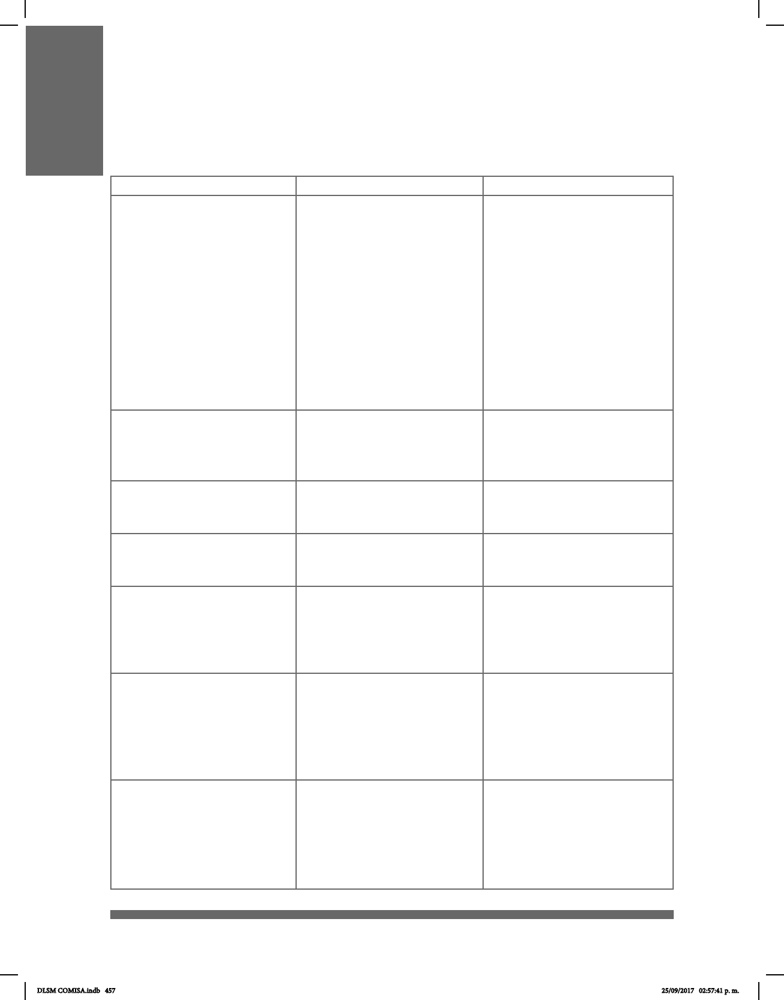

457
APÉNDICE 1. CONVENIOS DE TRANSCRIPCIÓN:
SÍMBOLOS UTILIZADOS PARA ESCRIBIR EN LSM
Símbolos Ejemplos Descripción
(MAYÚSCULAS) PALABRA
VERBO
SINTAGMA
SORDO
COMER
PAN DE MUERTO
Una palabra o un sintagma
en español en mayúsculas
representa una seña en LSM
(esta palabra se conoce
como glosa). El signicado
de la seña y de la palabra en
español puede no ser
exactamente el mismo.
En el caso de los verbos,
estos se escribirán siempre
en innitivo.
MAYÚSCULA
NIÑO
MUJER
LIBRO
Glosa señas manuales.
Minúscula en cursiva
Mi abuela cocinó arroz en la
cacerola
Traducción
dm-
#
-
+
dm-LUIS
dm-JUPITER
#OK
#ASÍ
YA-VEO
CON-PERMISO
MAMÁ+PAPÁ
SI+VERDAD
CON+CUÑADO
“dm” es la abreviatura para
deletreo manual.
Un signo de número (#)
indica que la seña es
un préstamo en deletreo
manual.
Cuando las palabras de
glosas están separadas por
un guión, ambas palabras
son representadas por una
sola seña.
Un signo de más entre
las palabras de la glosa
se utiliza para las señas
compuestas y contracciones.
DLSM COMISA.indb 457 25/09/2017 02:57:41 p. m.